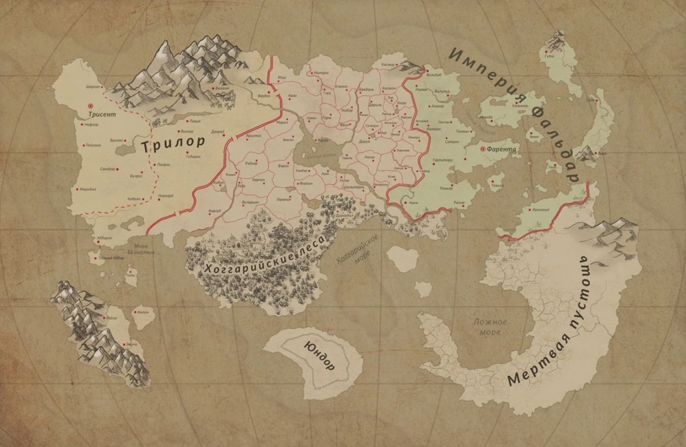

Мироздание
Исконно существовали два мира, представляющие собой принципиально разные энергии - Свет и Тьму, противоположные и не терпящие друг друга. Разделенные прослойкой из Пустоты, тысячелетиями миры существовали независимо. Вечность сконцентрировала эти энергии, создав Истинное Пламя и Истинную Тьму, а многовековые трансформации создали из них сначала материю, затем подмиры и, наконец, существ, населивших их, в одном мире из Света, в другом - из Тьмы.
Пришел момент, когда создания мира Света посчитали, что истина только в Свете, и задумали поглотить своих соседей. Для этого они создали могущественную армию Несущих Свет. Под предводительством могущественных сущностей, Дланей Света, армия открыла проход сквозь Пустоту и была готова начать вторжение, но один из Дланей вознамерился лично завладеть целым миром. Взяв с собой фрагмент Истинного Пламени, он один отправился в мир Тьмы и поставил на проход через Пустоту печать, оградившую мир Тьмы от его бывших союзников.
С этого момента Длань Света, ныне известный как Отец, начал своё завоевание. В центре мира он разжег ядро Света, распространив чуждую энергию по всему миру, воздвиг Башню богов и начал создавать подмиры, вначале самостоятельно, затем с помощью созданных им же помощников - богов. Одним из таких подмиров является и Ауларо́н, где будут происходить наши приключения.
Свет оказался смертелен для большинства созданий Тьмы. Выжившие оказались оттеснены к границе мира, куда Света попадало меньше всего. Заточенные между Светом с одной стороны и Пустотой с другой, они сформировали новый пласт реальности - Инферно. Некоторые создания смогли ассимилировать Свет в той или иной мере и найти своё место в изменившемся мире, другие остались верны своему происхождению и углубились в недра Инферно, где и обитают по сей день.
Ауларон
Ауларон - мир, похожий на многие. Посреди вод, под синим небом раскинулись участки суши, огромные и поменьше, с лесами, горами и реками. На ранних этапах своего существования Ауларон населяли только люди под надзором богов. Спустя века в мир пришли и другие разумные: зверолюди и эльфы. Пожалуй, эльфы оказали наиболее сильное влияние на мир. Они были пришельцами издалека, ставящими благополучие своего вида превыше нужд и интересов исконных обителей. Эльфы заняли территорию материка Арсари́м и принялись развивать своё государство, Юндор, и наращивать его мощь с помощью техномагии. В конце концов они нашли способ использовать божественную энергию для своих технологий. После этого начался период истребления богов, все они в итоге были убиты эльфами, которые собрали всю силу богов и вместе с частью материка подняли Юндор в воздух, в небеса, подальше от низших наземных обитателей.
Война со светом
Несущие Свет спустя тысячелетия все-таки нашли способ пройти сквозь Пустоту и начать войну. Это была битва вселенского масштаба, затронувшая многие подмиры. Жителям Ауларона пришлось пойти на многие жертвы, но в итоге, найдя поддержку у другого подмира, Мральдарима, они выстояли. Война оставила после себя разрушенные города и искорёженные земли, но жизнь в Аулароне продолжается. Тем более теперь, когда открыты межмировые врата не только в Мральдарим, но и в другие подмиры, отстроить утерянное и приумножить имеющееся становится всё проще - новый Ауларон наполняется другими разумными видами, активно организует торговлю иномирными ресурсами и внедряет доселе невиданные магические практики и ремесла в свой быт.